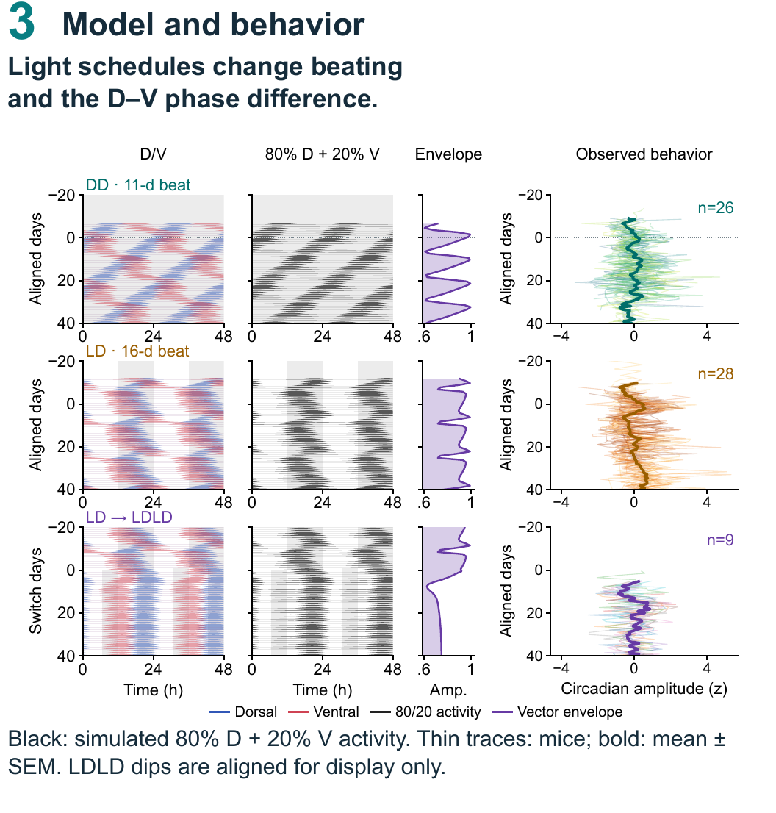

SfN poster 2026
Dorsal-ventral dissociation of suprachiasmatic nucleus oscillators reveals a potential mechanism for emergent multidien rhythms
Vuong Hung Truong, Pishan Chang, Hugh David Piggins, Jihwan Myung
Neuroscience 2026 · PSTR068.23

Share this poster: https://braintimelab.github.io/posters/sfn2026-truong/